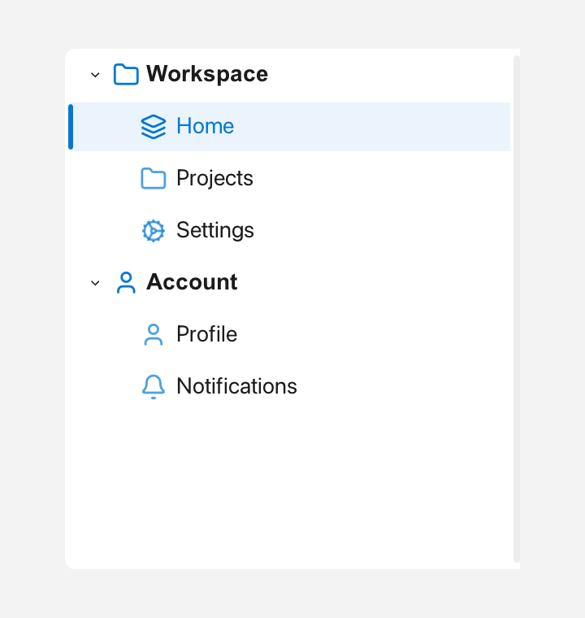

Nav
Nav is a navigation sidebar: a vertical strip with expandable groups and
selectable items, whose right edge can be dragged to resize it.

Expanded groups and a selected item.
What it's for
Use Nav when your app has several pages or sections and you want them listed
in a side panel, like the navigation pane of a settings app. Each group has a
label, an icon, and an expanded state, and holds items with an icon, a
label, and an id.
Clicking a group header expands or collapses it. Clicking an item selects it and
fires onSelect. Because you identify items by their string id, you can
select one from code without keeping track of row numbers.
A first example
A window is the operating-system window your app draws into. Window::open
creates it, and if (!win) stops the program if the window could not be opened.
win.add<T>(...) creates a widget inside that window and returns a
reference to it. Rect{x, y, width, height} places the widget. A callback is a
small function you give to a widget so it can call you back when something
happens.
#include <cstdio>
#include <utility>
#include <fluffy/fluffy.hpp>
int main() {
fluffy::Window win = fluffy::Window::open("Nav demo", 800, 500);
if (!win) return 1;
auto& nav = win.add<fluffy::Nav>(fluffy::Rect{0, 0, 200, 500});
fluffy::Nav::NavGroup g;
g.label = "Display";
g.id = "grp_display";
g.icon = fluffy::Icons::monitor;
fluffy::Nav::NavItem it;
it.icon = fluffy::Icons::bookmark;
it.label = "Label";
it.id = "page_label";
g.items.push_back(std::move(it));
nav.addGroup(std::move(g));
nav.setOnSelect([](const std::string& id) {
std::printf("%s\n", id.c_str());
});
win.run();
}
You build a NavGroup, fill its items with NavItem values, then add the
group with addGroup. The item's id is the value you use later to select it.
The onSelect callback receives that id when the user clicks an item.
The snippets below assume win and nav from this example.
Common tasks
Add groups and root items
nav.addGroup(std::move(g));
Groups are append-only through addGroup. If you need items that do not belong
to a group, add them directly:
fluffy::Nav::NavItem home;
home.label = "Home";
home.id = "page_home";
nav.addItem(std::move(home));
Select an item
nav.setSelectedItem("page_label");
std::string id = nav.selectedItemId();
setSelectedItem selects an item by id and also fires onSelect. Read the
current id back with selectedItemId().
Expand and collapse groups
nav.collapseAll();
nav.expandAll();
nav.expandGroup("grp_display");
nav.collapseGroup("grp_display");
expandAll and collapseAll change every group at once. expandGroup and
collapseGroup take a group id and change just that group. Groups start with
expanded = true.
Resize the sidebar
nav.setMinWidth(120.0f);
nav.computeMinWidth(win.theme(), win);
The right edge can be dragged to resize the sidebar. setMinWidth sets the
minimum width in pixels. computeMinWidth calculates a sensible minimum from
the current theme and window; the theme is the set of colors, fonts, and sizes
your app uses.
React to selection and width changes
nav.setOnSelect([](const std::string& id) {
std::printf("%s\n", id.c_str());
});
nav.setOnWidthChange([](float w) { });
The onSelect callback receives the selected item's id. The onWidthChange
callback receives the new width while the user drags the edge.
Good to know
Nav is built in code. A Nav: entry in YAML can set the initial selected
item id, but the groups and items themselves are added from C++.
Quick reference
Properties
| Property | Type | Description |
|---|---|---|
groups |
— | Ordered groups, append-only via addGroup (root items via addItem). |
selectedItem |
string |
id of the current item (read via selectedItemId(), set via setSelectedItem() which also fires onSelect). |
Group and item shapes
NavGroup { label, id, icon, expanded = true, enabled, items: vector<NavItem> }
NavItem { icon, label, id, enabled, on_click }
Methods
auto& nav = win.add<fluffy::Nav>(fluffy::Rect{0, 0, 200, 500});
fluffy::Nav::NavGroup g;
g.label = "Display";
g.id = "grp_display";
g.icon = fluffy::Icons::monitor;
fluffy::Nav::NavItem it;
it.icon = fluffy::Icons::bookmark;
it.label = "Label";
it.id = "page_label";
g.items.push_back(std::move(it));
nav.addGroup(std::move(g));
nav.setSelectedItem("page_label");
nav.collapseAll();
nav.expandAll();
nav.expandGroup("grp_display");
nav.collapseGroup("grp_display");
nav.setMinWidth(120.0f);
nav.computeMinWidth(win.theme(), win);
std::string id = nav.selectedItemId();
Events
| Event | Signature | When |
|---|---|---|
onSelect |
void(const string& id) |
Item click. |
onWidthChange |
void(float width) |
Drag resize. |
nav.setOnSelect([](const std::string& id) {
std::printf("%s\n", id.c_str());
});
nav.setOnWidthChange([](float w) { });